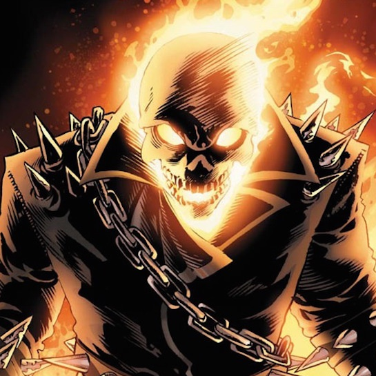

<!--Links de estilização-->
<link rel="stylesheet" href="../../static/css/tamanho-img.css">
<link href="https://cdn.jsdelivr.net/npm/bootstrap@5.3.0/dist/css/bootstrap.min.css" rel="stylesheet"
    integrity="sha384-9ndCyUaIbzAi2FUVXJi0CjmCapSmO7SnpJef0486qhLnuZ2cdeRhO02iuK6FUUVM" crossorigin="anonymous">
<link rel="stylesheet" href="https://cdn.jsdelivr.net/npm/bootstrap-icons@1.10.5/font/bootstrap-icons.css">
<link href="../../static/css/style.css" rel="stylesheet">

<article class="container">
    <a href="nomepost.html" target="_blank" rel="noopener noreferrer">
        <figure class="card mb-3">
            
            <figcaption class="card-body">
                <h5 class="cardtitle"></h5>
                <p class="card-text">
                    A Riot revelou que a 2ª temporada de Arcane
                    está prevista para ser lançada entre outubro e dezembro de 2024.
                    A segunda temporada de Arcane já tem três episódios prontos.
                    A primeira temporada demorou cerca de seis anos para ficar pronta, mas o CEO
                    da Riot tranquilizou os fãs dizendo que a sequência não irá levar tanto tempo.
                    Quando a 2ª temporada de Arcane começou a ser feita?
                    Conforme o teaser de anúncio da renovação de “Arcane”, a segunda temporada da
                    animação começou a ser produzida em novembro de 2021.
                    Nicolo também comentou que a série não voltaria em 2022. Seguimos aguardando mais novidades para o
                    ano de 2023!
                </p>
                <p>Como será a segunda temporada de Arcane?
                    Até o momento a Riot não deu detalhes sólidos de como será a segunda temporada de Arcane.

                    Em meio a diversas declarações “picadas” de diretores e roteiristas, bem como algumas teorias de
                    fãs, reunimos abaixo algumas informações importantes que podem moldar a sequência da série de LoL.

                    Silco e Vander mais jovens?
                    Durante uma sabatina no Reddit, um usuário perguntou sobre se seria possível vermos Silco e Vander
                    mais jovens antes da traição e se haveria um flashback de Silco sendo um pai para Powder quando ele
                    a levou criança.

                    A resposta de Alex, co-criador de Arcane, foi bem direta. O desenvolvedor comentou que
                    definitivamente veremos isso na próxima temporada de Arcane. Além disso, ele complementou dizendo
                    que será um episódio que fará as pessoas chorarem.</p>
                <p class="card-text"><small class="text-muted">21 de Setembro de 2023</small></p>

                <div class="card py-2 px-4 m-3  identific">
                    <div class="row g-0 aling-items-center">
                        <div class="row g-0 aling-items-center">
                            <div class="col-md-2">
                                
                            </div>
                            <div class="col-md-10">
                                <div class="card-body">
                                    <p class="card-text "><strong>Marlon Mendes</strong></p>
                                </div>
                            </div>
                        </div>
                    </div>
                </div>
            </figcaption>
        </figure>
    </a>
</article>